Purchase Order
As-Is
เมื่อสถานะของเอกสาร Purchase Order เปลี่ยนจาก Bid Selection เป็น Waiting to Verify หัวหน้าพัสดุจะเป็นคนกดปุ่ม "Verify" เพื่อเปลี่ยนสถานะเป็น Waiting to Release โดยไม่ต้องมีการอนุมัติใดๆเพิ่มเติม
และเจ้าหน้าที่พัสดุกดปุ่ม "Release" เพื่อเปลี่ยนสถานะเป็น PO Released
To-Be
เมื่อสถานะของเอกสารเปลี่ยนเป็น Waiting to Verify เราต้องการให้มีการลงนาม จาก
- บุคคลภายในผ่าน Camunda Workflow
- บุคคลภายนอกผ่านระบบ eSign (Supplier's Contacts)
โดยระบบจะเพิ่มให้มี Sub States ระหว่างสถานะ Waiting to Verify ดังรูป เพื่อติดตามสถานะของการลงนามก่อนที่จะเปลี่ยนสถานะเป็น Waiting to Release เพื่อกลับเข้า Flow ปกติ
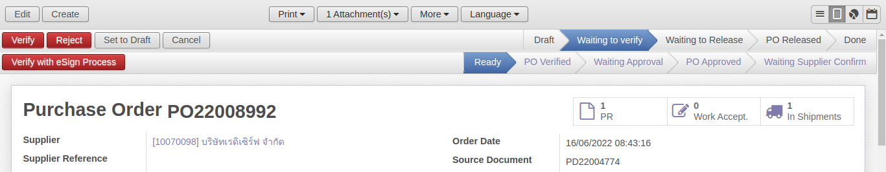
- Ready: สถานะเริ่มต้นเมื่อ State = Waiting to Verify
- PO Verified: หลังจากหัวหน้าเจ้าหน้าที่พัสดุ Verify with eSign Process
- Waiting Approval: หลังจากเจ้าหน้าที่พัสดุ Send to Approval เพื่อลงนามโดยบุคคลภายในผ่าน Camunda Workflow
- PO Approved: เมื่อจบ Camunda Workflow
- Waiting Supplier Confirm: เมื่อเจ้าหน้าที่พัสดุ Send to Supplier Confirm เพื่อการลงนามโดยบุคคลภายนอกโดยระบบ eSign
Info
หากไม่ต้องการขั้นตอนการลงนาม หัวหน้าพัสดุสามารถเลี่ยงได้โดยกดปุ่ม Verify แบบปกติ
Substate: Ready
เมื่อ State = Bid Approved, Substate จะเปลี่ยนเป็น Ready โดยอัตโนมัติ
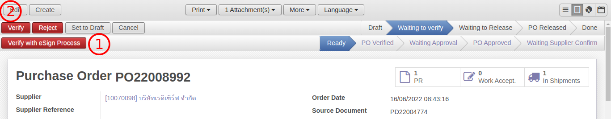
โดยจะมี 2 ทางเลือกสำหรับหัวหน้าพัสดุ
- Verify with eSign Process เพื่อเข้ากระบวนการลงนาม
- Verify เพื่อข้ามขั้นตอนนี้ และเปลี่ยนสถานะเป็น Waiting to Release ทันที
Substate: PO Verified
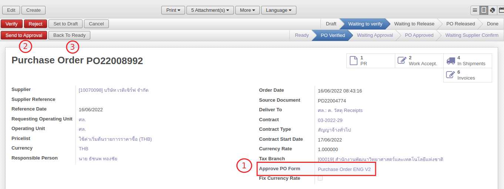
เจ้าหน้าที่พัสดุจะเข้ามาทำงานต่อ
- เลือก Approve PO Form เพื่อเตรียมแนบเป็น attachment
- กดปุ่ม Send to Approval
- Back To Ready: กรณีที่มีการยกเลิก / เปลี่ยนแปลงการทำเอกสาร
Substate: Waiting Approval
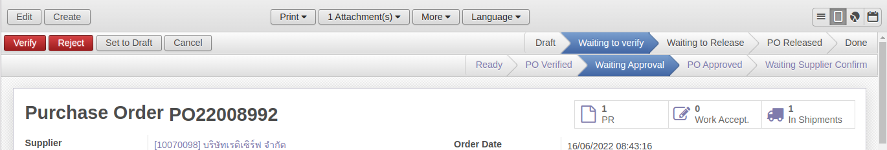
สถานะนี้เป็นการส่งต่อไปที่ Camunda Workflow โดยระบบจะดำเนินการดังต่อไปนี้
- พิมพ์ฟอร์ม Approve PO Form เป็น attachment แนบไว้กับเอกสาร (on background)
- ส่ง Intray Message เพื่อแจ้งเตือนผู้อนุมัติตามสายพัสดุให้เข้าไปอนุมัติต่อที่ Camunda
- ส่งค่าผ่าน API (data + attachment links) เพื่อ start Camunda Workflow
- ดึงข้อมูล Workflow จาก Camunda มาไว้ที่ Approval History
พิมพ์ฟอร์ม Approve PO Form
ระบบ print เอกสารจาก Approve PO Form แล้วแนบไฟล์เข้าไปที่เอกสารนั้นให้อัตโนมัติ โดยที่ชื่อไฟล์แนบจะเป็นเลขที่เอกสาร
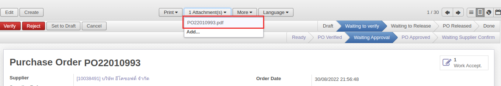
ส่ง Intray Message
ข้อความแจ้งเตือนจะส่งให้ผู้มีอำนาจอนุมัติตามสายพัสดุ
โดยรูปแบบข้อความจะเป็น
<เลขที่เอกสาร PO> » <Procurement Type จาก PD> <วัตถุประสงค์จาก PD>
ยอดรวม <ยอดรวมเอกสาร PO (ถ้าเป็นสกุลเงินต่างประเทศ ระบบจะแปลงให้เป็น บาท)> บาท
ตัวอย่าง
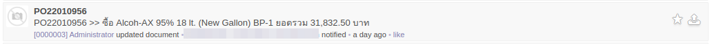
ส่งค่าผ่าน API start Camunda Workflow
การตั้งค่าระบบเชื่อมกับ Camunda Workflow
- ไปที่เมนู Settings > Configuration > PABI Web.
-
เปิด Open Connection to PABI Web. แล้วจะเห็น Field ใหม่ชื่อ PABI Web URL for Camunda
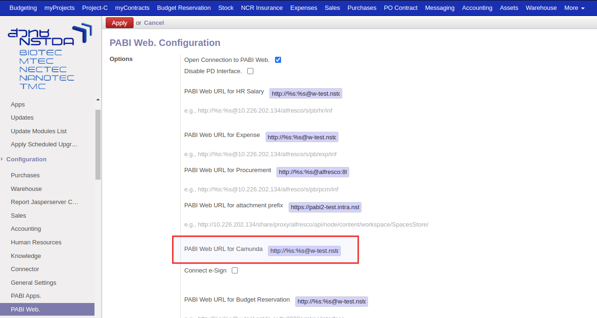
- ฐานทดสอบจะใช้ http://%s:%s@w-test.nstda.or.th:3030/xmlrpc/interface
ซึ่ง %s ระบบจะดึง Username และ Password จาก System Parameters
- ฐานทดสอบจะใช้ http://%s:%s@w-test.nstda.or.th:3030/xmlrpc/interface
-
กดปุ่ม Apply
ข้อมูลที่ใช้ในการส่งค่า API Camunda Workflow
arg = {
"poNo": "PO16000003", # เลขที่เอกสาร PO
"sectionId": "1", # ID ของ section จาก responsible person ที่เอกสาร PD
"docType": "PD4", # ประเภทเเอกสารใน Procurement Method ที่เอกสาร PD
"objective": "Buy Something 1 piece", # Objective ที่เอกสาร PD
"total": "100000.00", # ยอดเงินรวม (สกุลเงินบาท)
"reqBy": "002648", # employee code จาก responsible person ที่เอกสาร PD
"purchaseMethod": "PD4-เฉพาะเจาะจง", # <docType>-Procurement Method ที่เอกสาร PD
"doc": { # เอกสารแนบที่ระบบสร้างให้
"name": "pd2000001.pdf",
# public link -> ระบบจะดูจาก url จาก parameter web.base.url และต่อด้วย /get_purchase_attachment?attachment_id=<id ของเอกสารแนบ>
# http://google.com/get_purchase_attachment?attachment_id=100
"url": "http://google.com"
}
"attachments": [ # เอกสารแนบเพิ่มเติมอื่น (ชื่อห้ามซ้ำกับเลขที่เอกสาร)
{
"name": "pd2000001.pdf",
"url": "http://google.com"
}
]
}
หลังจากได้ข้อมูลในการส่งแล้ว ระบบจะส่งด้วย function po.action(arg) เพื่อส่งข้อมูลให้ Camunda
ดึงข้อมูล Workflow จาก Camunda
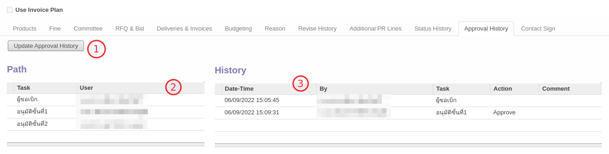
- สามารถกดปุ่ม Update Approval History เพื่อดึงข้อมูลการอนุมัติ
- ข้อมูลลำดับการอนุมัติ
- ตารางแสดง Approval History
Substate: PO Approved
เมื่อ Camunda Workflow จบ จะส่ง API กลับมาเพื่ออัพเดทสถานะ โดยข้อมูลที่ส่งกลับมาจะเป็น
{
"name": "POxxxxxxxx",
"action": "C1", # C1 = Approved, W1 = Rejected
"approve_uid": "123456", # Employee Code
"comment": "xxxx"
}
-
กรณี Rejected (action = W1)
- สถานะหลัก (state) ของเอกสารถูกเปลี่ยนเป็น "Rejected" พร้อมเหตุผลใน Reason Tab 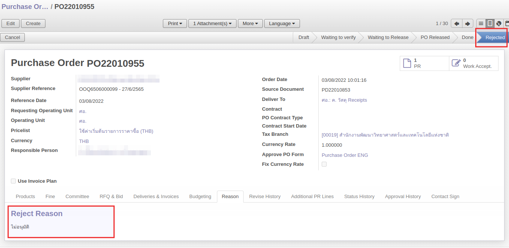
- จบการทำงาน (เจ้าหน้าที่พัสดุต้องกลับไปแก้ไขและส่งเอกสารใหม่)
-
กรณี Approved (action = C1)
- สถานะย่อย (sub-state) ของเอกสารจะถูกเปลี่ยนเป็น "PO Approved" 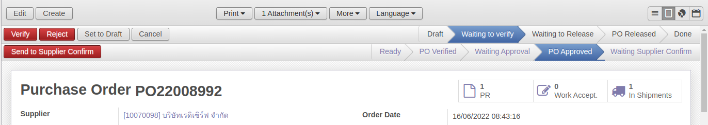
- แสดงชื่อผู้อนุมัติคนสุดท้าย (Approved PO by) และวันที่ส่งกลับมา (Approved PO Date) ใน Deliveries & Invoices Tab 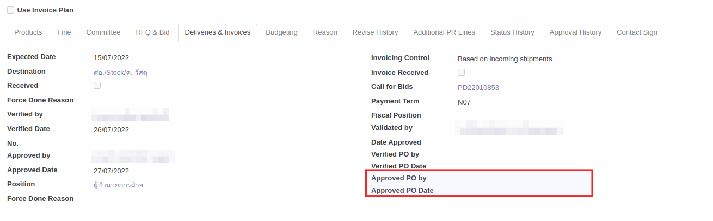
- เจ้าหน้าที่พัสดุจะกดปุ่ม Send to Supplier Confirm โดยเลือกผู้ลงนามเอกสารที่ Contact Sign Tab
- กรณีที่เป็น Supplier - นิติบุคคล: แสดงข้อมูลของบุคคลที่อยู่ในบริษัททั้งหมด
- กรณีที่เป็น Supplier - บุคคล: แสดงข้อมูลของบุคคลนั้น
- กรณีที่มีบุคคลใน Supplier - นิติบุคคล เพิ่ม เจ้าหน้าที่พัสดุสามารถกด Update Contact Sign เพื่อให้ระบบแสดงรายชื่อใหม่
- สามารถเลือกผู้ลงนามเอกสารได้เพียงคนเดียว โดยคลิกที่ Use Sign 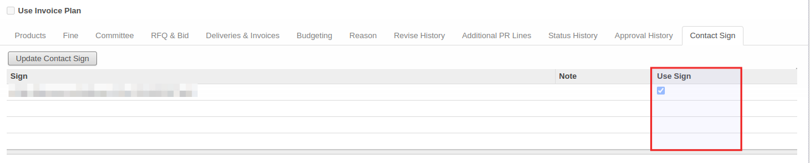
Substate: Waiting Supplier Confirm
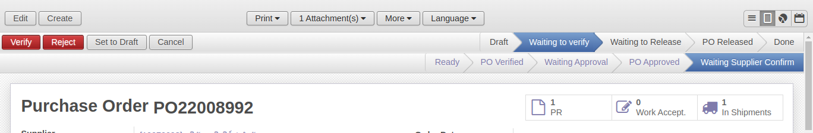
สถานะนี้เป็นการส่งต่อไปที่ระบบ eSign โดยระบบจะดำเนินการดังต่อไปนี้
-
ตั้งค่าการเชื่อมต่อกับระบบ eSign
- ไปที่เมนู Settings > Configuration > PABI Web.
- เปิด Open Connection to PABI Web. แล้วจะเห็น Field ใหม่ชื่อ Connect e-Sign
-
เมื่อคลิกเชื่อมต่อ ระบบจะให้กรอก Host, Database ในการเชื่อมต่อ > Apply
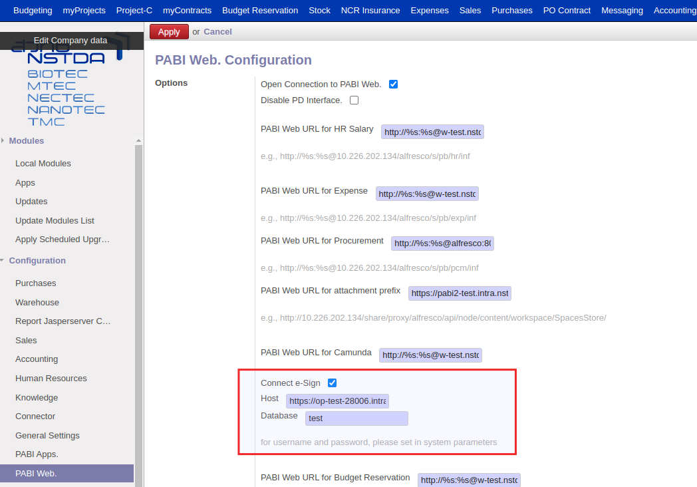
-
สร้าง / เปลี่ยน Username, Password สำหรับการเชื่อมต่อได้ที่เมนู Settings > Technical > Parameters > System Parameters
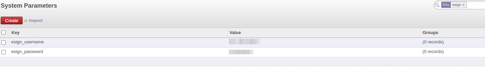
- esign_username: กรอก username สำหรับเชื่อมต่อระบบ eSign
- esign_password: กรอก password สำหรับเชื่อมต่อระบบ eSign
-
ส่งค่าผ่าน API ไปที่ eSign โดยส่งไฟล์ PDF ของ Approve PO Form ไปด้วย
- ข้อมูลส่งเข้า eSign
{ "state": "sent", "doctype": "internal", "upload_type": "sent_auth", "upload_file": base64.b64encode(result), # ไฟล์ pdf จาก Approve PO Form "upload_file_name": u"{}.{}".format(self.name, report_type), "user_id": "123456", # รหัสพนักงานเจ้าหน้าที่พัสดุที่ทำรายการ "file_storage_interval_type": "days", "file_storage_interval_number": 5, # public link -> ระบบจะดูจาก url จาก parameter web.base.url และต่อด้วย /get_purchase_state_signed?model=purchase.order&po_id=<id ของเอกสาร PO> "callback_url": "<url>/get_purchase_state_signed?model=purchase.order&po_id=<id po>", "owner_ids": ['abcde@fgh.ijk'], # email ผู้รับผิดชอบ "partner_ids": [ # ข้อมูลผู้ลงนามเอกสาร { "is_employee": False, "idcard": signer.vat, "email": signer.email, "name": signer.name, 'lines': [ # ตำแหน่งการประทับตราและลายเซ็นของบุคคลนั้น { "type": "signature", "width": "0.19", "height": "0.03", "posX": "0.59", "posY": "0.81", "page": "1", }, { # ถ้าบริษัท หรือบุคคลนั้นมีคำว่า "และประทับตรา" ให้ส่งตราประทับด้วย "type": "seal_stamp", "seal_stamp": "base64...", "width": "0.14", "height": "0.03", "posX": "0.63", "posY": "0.88", "page": '1', } ] } ], }
- ข้อมูลส่งเข้า eSign
-
ส่งข้อมูลกลับมา เมื่อระบบ eSign ทำกระบวนการลงนามเอกสารเสร็จสิ้น
- eSign จะเรียก function callback_url จากข้อมูลที่ระบบส่งไป
- เมื่อ call function ระบบจะดึงข้อมูล pdf ที่มีการลงนามแล้วในระบบ eSign มาเก็บไว้ใน Attachment เพิ่มเติม โดยมีชื่อ "_signed" ต่อท้าย
-
สถานะเปลี่ยนเป็น Waiting to Release
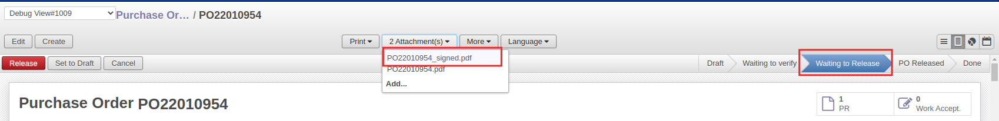
Email เพิ่มเติมตอน State = PO Released
- เพิ่มการส่ง email to [PO committee + PR’s requested by, prepared by + PO’s supplier’s Email]
- แนบไฟล์เอกสารที่ผ่าน e-Sign เรียบร้อยแล้ว
- เพิ่มปุ่มใหม่สำหรับการส่ง email ชื่อ Release with Send E-mail หลักการทำงานเดียวกับ Release แต่จะมีการส่ง Email เพิ่มเติม 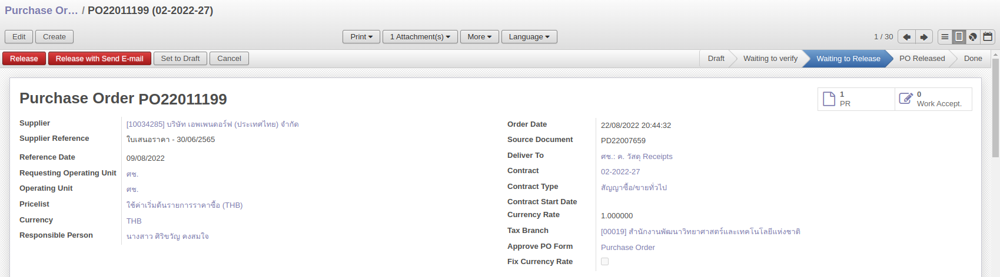
- รูปแบบ email จะเป็นดังนี้
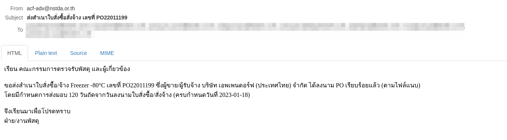
เรียน คณะกรรมการตรวจรับพัสดุ และผู้เกี่ยวข้อง ขอส่งสำเนาใบสั่งซื้อ/จ้าง <objective จาก PD> เลขที่ <PO Number> ซึ่งผู้ขาย/ผู้รับจ้าง <ชื่อ Supplier> ได้ลงนาม PO เรียบร้อยแล้ว (ตามไฟล์แนบ) โดยมีกำหนดการส่งมอบ <condition*> วันถัดจากวันลงนามใบสั่งซื้อ/สั่งจ้าง (ครบกำหนดวันที่ <Contract end date>) จึงเรียนมาเพื่อโปรดทราบ ฝ่าย/งานพัสดุ -------------------------------------------------- *condition: ตรวจสอบข้อมูลของ Fine Condition 1. กรณีที่เป็น Day ให้ดูข้อมูลจาก Delivery Within (Days) 2. กรณีที่ไม่ใช่ Day ให้ดูข้อมูลจาก Contract Start Date
หมายเหตุเพิ่มเติม
Note
- ปุ่ม Verify แบบปกติจะใช้ได้เมื่อ Substate ยังเป็น Ready เท่านั้น เมื่อ Substate ทำงานแล้ว ระบบจะไม่ยอมให้กดปุ่ม (show warning)
- กรณีที่ Substate เป็น Waiting Approval หรือ Waiting Supplier Confirm จะไม่สามารถ Cancel หรือ Set to Draft เอกสารได้